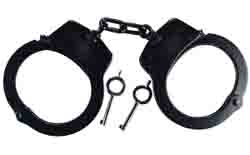

Como previsto em nosso post sobre a súmula vinculante nº 11 de nosso Egrégio Tribunal já está produzindo efeitos. Mas não me refiro aos efeitos jurídicos deste "ato legislativo" de nossos ministros, mas aos efeitos práticos, a pequena tragédia anunciada que vai explodir em breve, e obviamente, em cima da linha de frente do sistema punitivo do estado, ou seja, os policiais.
Já tramita no Supremo as três primeiras ações denunciando o descumprimento da súmula que limita o uso de algemas em suspeitos e presos. Em uma Reclamação (nº 6540), um advogado alega que um juiz ordenou que um acusado permanecesse algemado durante o julgamento, com a justificativa de que havia "efetivo risco de fuga e perigo à integridade física do magistrado e dos demais presentes", explicação considerada meramente subjetiva pelo defensor.
Em outra ação, o juiz da 3ª Vara Criminal de Ceilândia/DF, alegou insuficiência no número de agentes que escoltam os acusados, que seriam presumidamente perigosos, e alegou ainda que a Súmula Vinculante do STF não se aplica a julgamentos feitos pelo próprio juiz, onde a imagem do preso não será afetada. Neste caso específico, devemos destacar o argumento utilizado pelo juiz. O Uso de algemas foi limitado pelo STF com base em um julgamento de homicídio, no qual se considerou que os integrantes do tribunal do juri ficaram impressionados com a imagem do homem algemado, passando a idéia de que ele era culpado.Ora, o uso de algemas pelos policiais se faz na primeira fase da persecução penal, antes do início do processo. Assim apenas as pessoas que presenciarem a prisão e condução do suspeito ficarão impressionadas e tendentes a considerá-los culpados. Mas quem vai julgar esse suspeito, não sendo crime doloso contra a vida, será o juiz, e este além de não presenciar o momento da prisão, deve ser imparcial. Valeria para nós também este argumento. Contudo acho que ele não se sustenta, mas o CdP não é um blog jurídico, então deixa quieto e aguardemos.
Outra situação, resultante desta vez do respeito à súmula do STF, aconteceu em um julgamento de homicídio em Cambuci, na Região Serrana do Rio de Janeiro. O assassino estava sem algemas, e depois que foi lida a sentença do juri, já condenado, ele se descontrolou, danificou móveis da sala de audiência, e começou a ameaçar a juíza e a promotora, que elegantemente se esconderam debaixo de suas respectivas mesas, e pediram ajuda para a Polícia. Foram necessários 6 PMs para segurar o cara. Agora a juíza afirma que só fará outro julgamento se houver reforço policial.Este foi um exemplo bem simples de como as coisas são bem diferentes para quem está sentadinho em uma cadeira confortável dentro de um gabinete com ar condicionado, em comparação àqueles que têm que agir no local, no calor do momento, tentando conter irritações de criminosos perigosos e que não respeitam a lei nem seus agentes. Vamos ver onde isso vai parar.
Fontes: do site do STF e da FENAPEF.